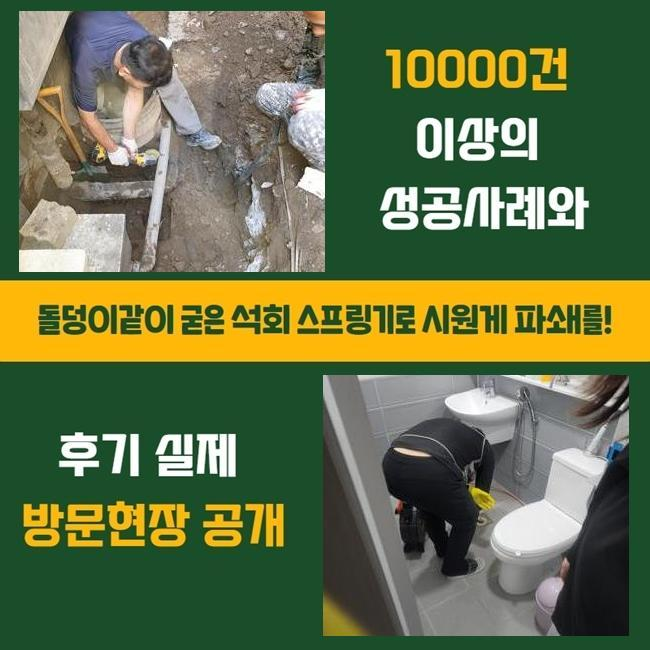
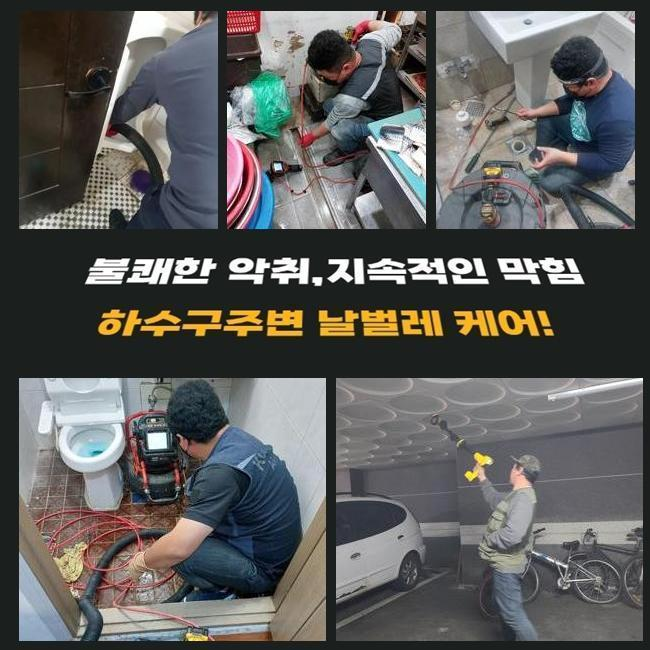
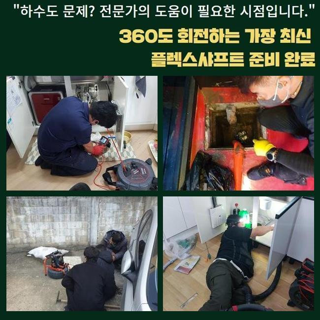
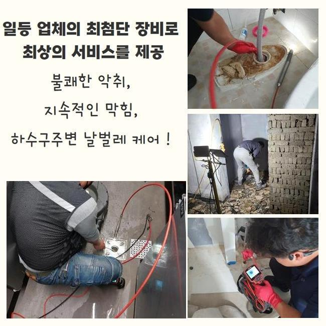
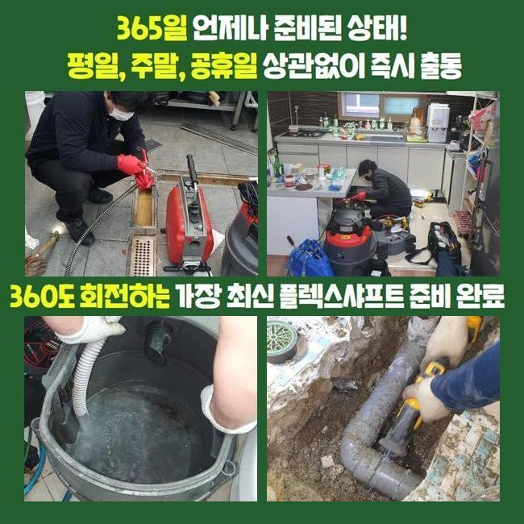
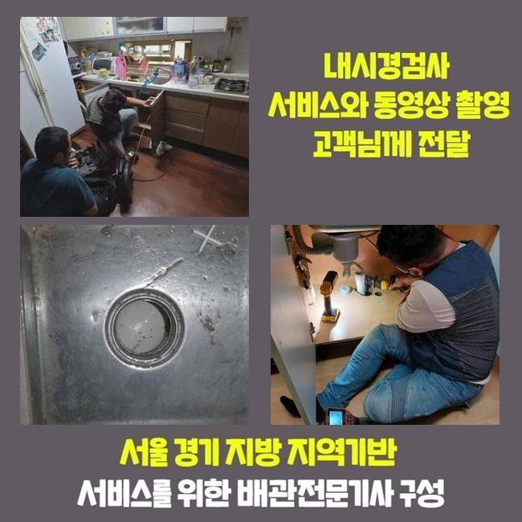
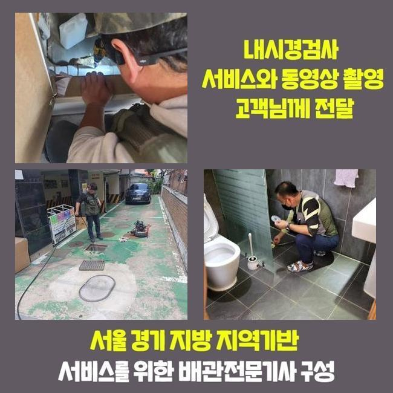

🏠 용인 풍덕천동오수관뚫음 성복동 배수로뚫기 배관공사
용인 풍덕천동 하수구막힘 전문 시공 후기

📋 작업 개요
- 위치: 용인 풍덕천동, 풍덕천동, 용인
- 서비스 유형: 하수구막힘, 배관막힘, 누수수리, 뚫는업체, 배관청소, 고압세척, 설비공사, 배관보수, 악취차단
- 작업 일시: 2025. 2. 3. 15:56
- 업체명: 하수구수사대 (010-5615-2118)
🔍 문제 상황
용인 풍덕천동오수관뚫음 성복동 배수로뚫기 배관공사
하수구의 마비가 일어나는 원인은 여러가지가 있지만 통계적으로 슬러지 덩어리와 석회가 주요 이물질이라 선정할 수 있어요
인테리어 작업을 마치고 하수의 중단이나 역행이 유발되는 경우라면 작업 중 들어간 석조 등을 원인으로 추정하는 것이 적중할 수 있는데요
향후 소개할 현장도 클리닝을 하는 도중에 막힘 원인들을 내부에서 끄집어올리게 됐습니다
평범한 집에서 하수도막힘이 시작되고 처치되지 못하면 인근의 세대까지 물피해가 발생할 수 있으니 빠르게 문제점을 보완해야 합니다
거기다 상가 건물이면 장사를 곤란하게 하는 커다란 골칫거리이므로 더욱 신속 깔끔한 수선에 들어가야 합니다
이번 케이스의 특이점은 얼마 전에 끝난 인테리어시공이 있은 후부터 하수구가 이상해져서 곤란을 겪으셨다고 해요
보통 인테리어시공이 있은 후부터 파편이나 도구들을 남기지 않고 제거하지 않거나 관로로 흘려보내면 치명적인 막힘을 만듭니다
다수의 사유들로 인해 오류가 발생하니 가볍게 보지 않고 관측과 청소 장비를 가지고 고객님이 계신 건물로 갔습니다
고객님과 인사를 드리고 어떤 상황인지 판별해 보았는데 세면대가 설치된 바닥부근의 고장이 나버린 걸로 보였습니다
석션 장치로 근처의 청소부터 시작한 뒤에 내부에 고여있는 물을 끌어당겨주기로 했습니다
단단한 것이 막혀있어서 석션만 돌려서는 역부족인 부분이었지만 후속 조치를 하기 위해서는 내부에 찬 혼탁한 물을 삭제하는 게 먼저였습니다

🔎 원인 분석
💡 전문가 진단: 정밀 진단 장비를 사용하여 슬러지의 고착 여부를 판명하고 타격/세척 작업을 실시했습니다.
하수구를 뚫어내기 위해서는 여러 차원의 장치들이 필히 동원되어야 합니다
가장 기본이 되는 석션과 샤프트 기기는 필수이고 어두컴컴한 관로를 뚜렷하게 조사하고자 한다면 내시경도 함께 써야 합니다
중앙배관에 속하거나 깊은 위치에 있다면 스프링과 고압세척기를 추가할 수 있어서 항상 보유여부를 확인하고 현장에 갑니다
요즘은 전문적인 뚫는 장치들이 점점 뛰어나게 변하니 하수구 청소 작업이 간단하게 끝날 때가 많습니다
심도 깊은 지식을 경미하게 보유했다면 장비가 뛰어나다고 해도 작동시키는 게 곤란할 것입니다
현황을 완전히 분석하지 않고 사용법에 맞지 않게 가동한다면 하수구의 균열 및 누수까지 연결될 수 있는 부분이니 하수구를 보는 카메라로 배관 속을 투명하게 밝혀보고 뚫어내는 기기를 통한 작업을 실시하는 게 좋습니다
내부에 찰랑대던 물을 제거하고 배관 내시경을 깊은 관로 속으로 진입시켜서 무엇이 문제인지 확인해봤습니다
이리저리 자리를 옮겨가며 확인해보니 내부에 모래 알갱이나 비닐조각같은 물질들이 한껏 차올라서 물 배출이 힘들다는 사실을 보고 이해하게 되었습니다
내부 타일공사나 인테리어 등의 시공을 했다면 관로로 잔여물이 내려가지 않도록 자주 쓸어주면서 청소를 담당해야 합니다
심층부에 이르러서 규모가 큰 뭉치가 발견됐는데 시공을 하는 과정에서 백시멘트 가루가 안으로 떨어졌고 뭉쳐서 응고가 된 것을 직접 확인하게 됐는데요
처리가 되지 않은 일부의 백시멘트를 방출한 듯 했습니다
찌꺼기들로 뒤덮여있는 상태라서 막힘이 심해보였습니다

🔧 작업 과정
카메라를 돌려서 내부를 보면서 파쇄 작업을 담당해서 다치지 않게 해주었어요
플렉스샤프트의 가동을 통해 슬러지를 자잘하게 잘라서 꺼내보려고 시도했습니다
갈아낸 찌꺼기를 석션기로 흡입 처리를 했더니 뭉치가 튀어올라왔어요
장기간 투자하여 작업을 실시했는데 시멘트가 워낙 강직도가 높다보니 배관 교체작업까지 해야하는 심각한 상황으로 작업 중에 절감했습니다
샤프트만 써서는 만족스러운 성과를 내지 못할 듯 하여 관로에 타격을 줄 수 있는 단계를 고수하면 배관이 훼손될 것 같더라고요
바닥을 먼저 파서 관로의 상태를 점검하고 작업 향방을 정하기로 했습니다
미리 양해를 구한다고 전해드리고 굴착을 시작했어요
아니나 다를까 안에 백시멘트가 대형 장애물이 되어서 관로가 차단된 게 맞더라고요
문제의 리모델링 이후에 내려간 가루들이 덩어리화가 된 것입니다
시멘트 가루들은 양생이 빠른 편이라서 관로가 차단이 되는 상황들이 막힘 작업지에 가보면 여러번 목격됩니다
잘라준 파트를 하자없는 파이프를 가져와 접붙였습니다
하수관 일부를 절단할 때도 절단면이 고르게 잘려나가도록 해야하며 이어지는 부위에도 갭이 벌어지지 않아야 합니다
연결부를 깔끔하게 신경쓰지 못한다면 조금씩 떨어지기 시작하거나 헐렁대다가 누수 문제로 불씨가 확대될 수 있습니다
이어준 배관이 움직이거나 이탈되지 않게끔 신중하게 작업을 해드리게 됐습니다
반복작업의 성과로 빼낸 이물질이 한가득 고였습니다
이처럼 상당한 양의 이물질이 좁다란 관로에 놓여있었으니 배수가 힘들어진 것입니다
이제는 기능이 나아졌는지 보려고 하수구 속으로 물동이를 폐수시켜보는 과정을 통해서 배수 기능 검사에 들어갑니다
우수한 작업으로 물이 끊기는 결함들이 눈 씻듯 사라진 변화를 보고서 마무리 미장 공사로 보기좋게 마무리했어요
바닥 내부로 반죽한 시멘트를 넣어서 배관이 움직이지 못하게 하고 울퉁불퉁한 면이 없도록 평탄화를 거쳐줍니다


✅ 작업 완료
물샘을 차단할 수 있는 방수를 입혀준 이후에 철거해줬던 타일 마감재를 각 맞춰서 접착합니다
만일 하수구를 고친 다음에 철거했던 바닥부에 방수 시공을 하지 않으면 아래에 위치한 이웃까지 누수사고가 벌어질 수 있다보니 작업 후의 복원단계도 신경써서 다듬어드립니다
시멘트가 말라야하니 몇 시간 정도는 이용을 지양하시라고 알려드리고 기분좋게 하수구 보수를 성공할 수 있었어요!
하수구막힘의 양상은 종잡을 수 없게 다양하지만 욕실 쪽 하수 장애도 취약한 곳 중 하나라서 의뢰를 많이 주시곤 합니다
빠르게 내방드릴 수 있으니 연락주시면 한가득 막혀버려서 미진한 하수구 통수를 새것처럼 만들어드리겠습니다




⚠️ 베란다 누수 및 방수 관리 방법
- ✅ 비가 많이 올 때 창틀 주변이나 아래층 천장에 얼룩이 생기는지 정기적으로 확인해 보세요.
- ✅ 우수관 주변 실리콘 마감이 들뜨거나 깨진 틈새가 있는지 손상 여부를 수시로 체크하세요.
- ✅ 베란다 바닥 타일의 줄눈(메지)이 소실되면 그 틈으로 물이 침투하여 누수가 유발됩니다.
- ✅ 누수 의심 증상 발견 시 방치하면 아래층 손실이 커지므로 즉시 전문가의 진단을 받으십시오.
💡 핵심 정리
- 확실한 장비 작업(내시경 점검 및 샤프트 스케일링)으로 원인을 뿌리 뽑습니다.
- 작업 후 1년 이내에 동일한 부위 재발 시 100% 무상 A/S 서비스를 보장합니다.
- 서울 · 경기 · 인천 전 지역에 24시간 언제든 긴급 출동할 수 있도록 항시 대기 중입니다.
❓ 자주 묻는 질문 (FAQ)
🚨 용인 풍덕천동 하수구막힘 문제로 고민이신가요?
정확한 원인 진단과 확실한 시공으로 재발 없는 해결을 약속드립니다.
24시간 긴급 출동 | 서울 · 경기 · 인천 전지역 | 1년 내 재발 시 무상 A/S